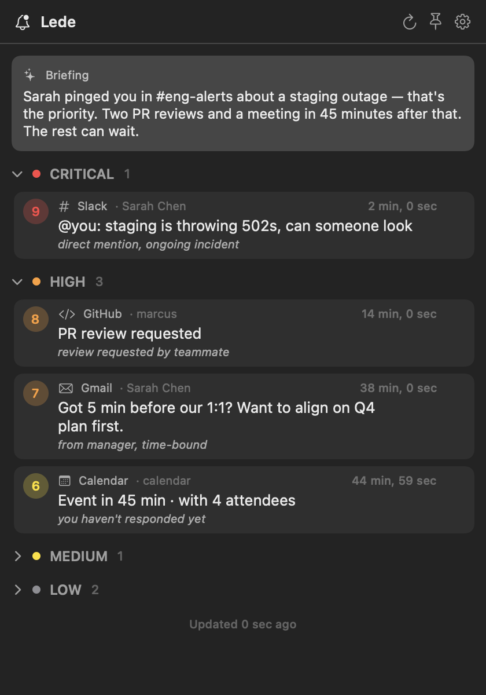

Lede
Watch your inboxes. Surface what matters.
Sits in your menu bar, watches the inboxes you connect, and uses Claude to pull the few items that actually need you to the top — quietly, locally.

Watch your inboxes. Surface what matters.
Sits in your menu bar, watches the inboxes you connect, and uses Claude to pull the few items that actually need you to the top — quietly, locally.

Gmail, GitHub, Slack, Outlook, Google Calendar, Outlook Calendar. Connect any subset; Lede only watches what you give it access to.
Each item is scored 0–10 by Claude — direct asks and outages float to the top, automated noise sinks. Sender, subject, and a short snippet are enough; full message bodies never leave your Mac.
Quiet hours auto-mute, snooze on demand, dismissed items don't come back. Background refresh keeps the bell honest without flooding you.
No analytics, no telemetry, no server. Tokens stay in your Keychain; summaries cache on your Mac. The only network calls are to your providers and the Claude API.